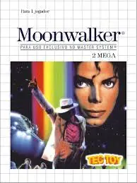

💡 Para jogar em tela cheia, clique no ícone de configurações "↓" no centro do emulador e então "Enter Full Screen"

Michael Jackson's Moonwalker para Master System, lançado originalmente na Europa em Fevereiro de 1991 e no Brasil pela Tectoy (responsável pelo Master System III) em 14 de Fevereiro de 1991, é uma adaptação de plataforma 2D de 8 bits que se distingue das versões mais conhecidas. Baseado no filme homônimo de 1988, o jogo transforma Michael Jackson em um herói que precisa resgatar crianças sequestradas pelo vilão Mr. Big. Neste side-scroller, Michael, vestido com seu icônico terno de "Smooth Criminal," deve atravessar seis estágios distintos, como o Club 30 e as cavernas, explorando minuciosamente cada cenário para localizar as crianças perdidas. Seus ataques são coreografados, utilizando socos, chutes e o famoso "Moonwalk" para despistar e nocautear inimigos. A trilha sonora conta com versões em 8 bits de sucessos como "Smooth Criminal," "Beat It" e "Bad," criando uma atmosfera nostálgica e autêntica. O jogo é notável pela sua jogabilidade focada em exploração e, principalmente, pelo clímax onde Michael se transforma em um robô gigante ou em uma nave, mudando o gameplay para um intenso estilo de tiro, marcando uma conclusão épica e visualmente ambiciosa para o console de 8 bits.
Para salvar seu progresso neste jogo, você pode salvar o arquivo .save usando as opções do emulador que está utilizando. Isso pode ser feito através do ícone 💾 no menu no canto inferior esquerdo da tela. Isso criará um arquivo de salvamento que você poderá carregar 📂 posteriormente para continuar de onde parou.
Wiki Oficial